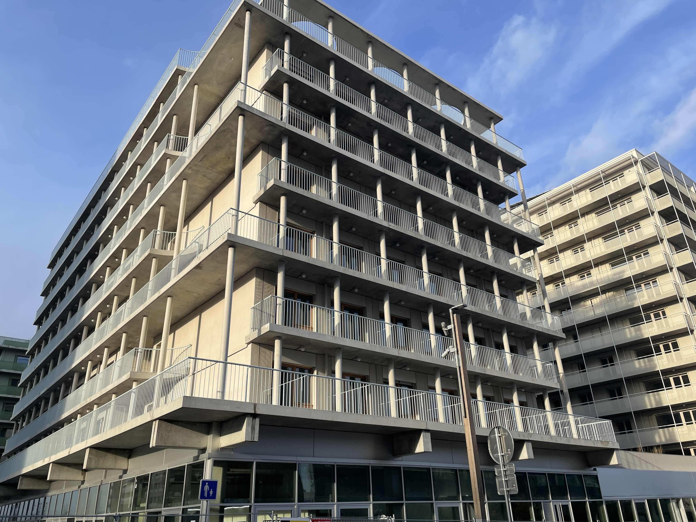
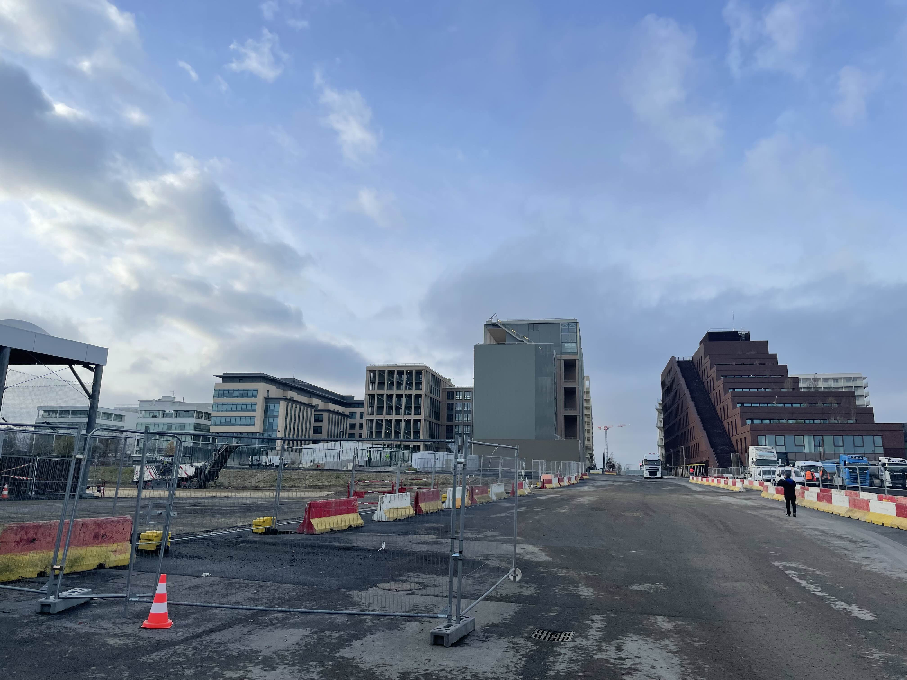
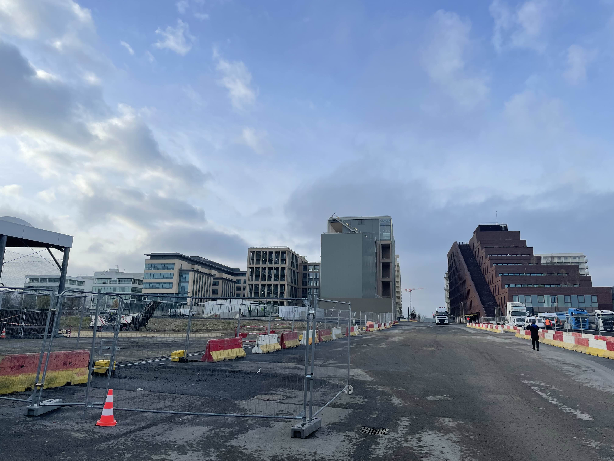
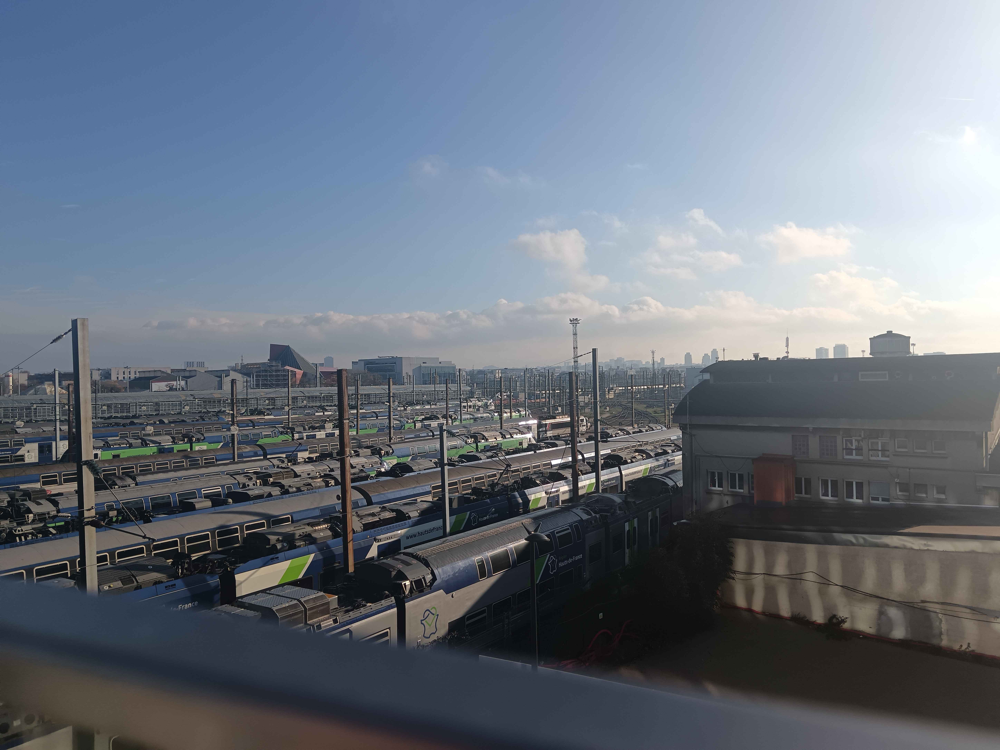
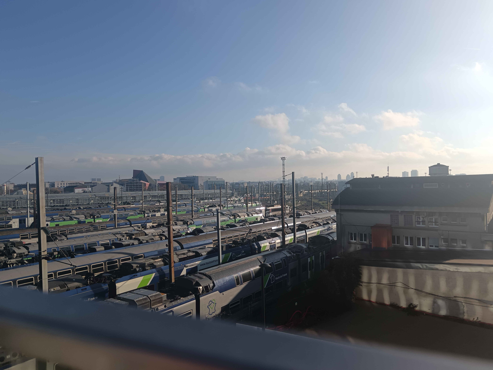
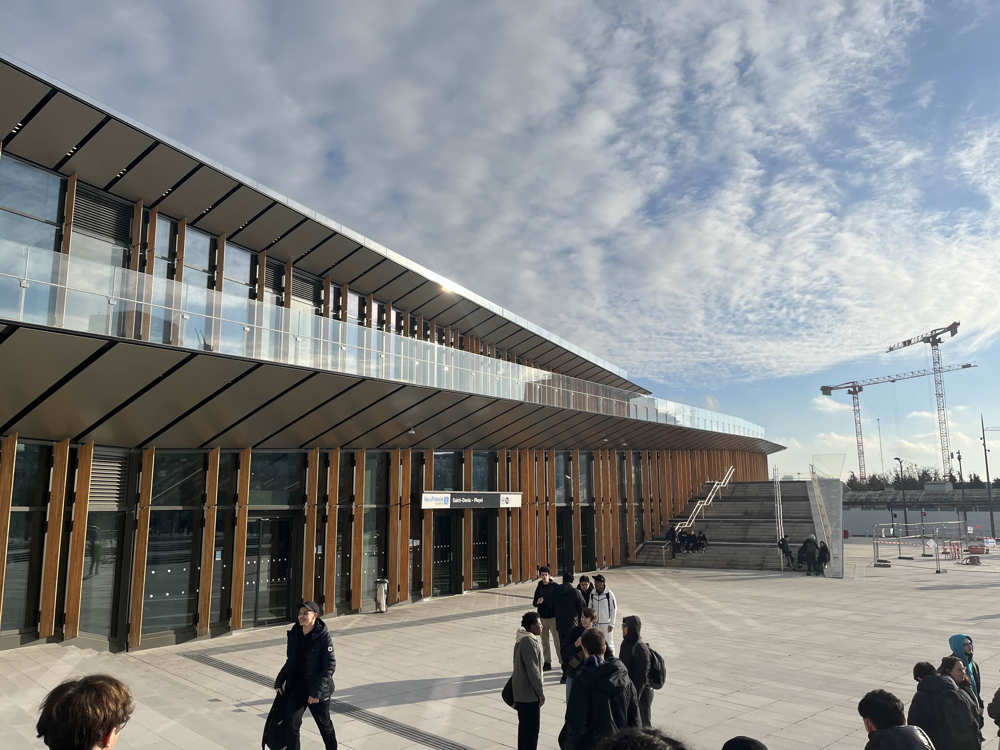
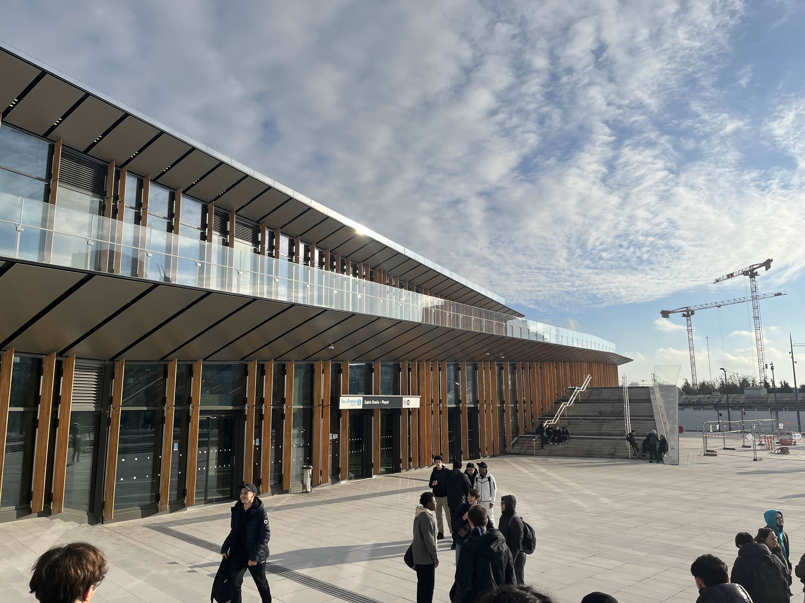
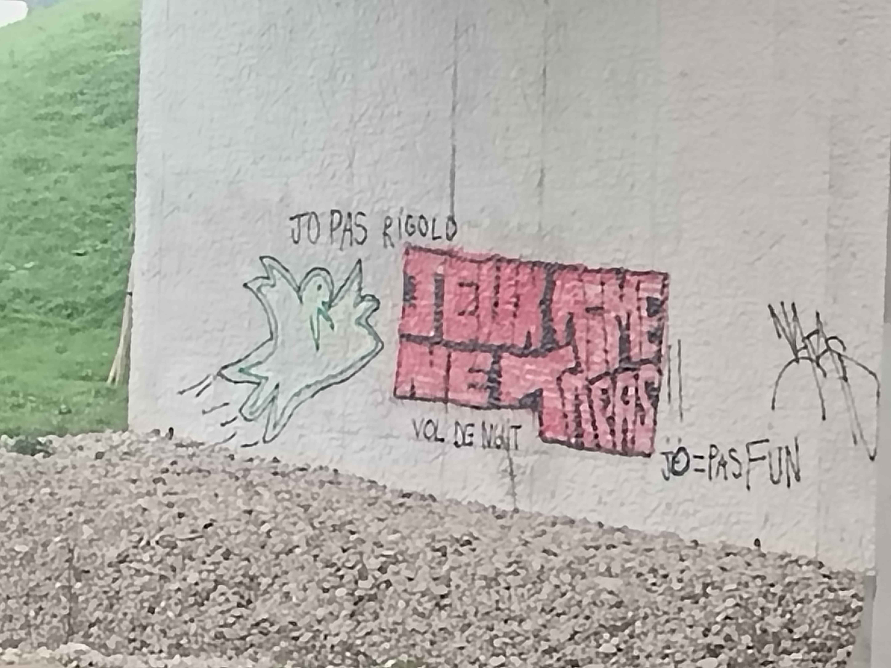
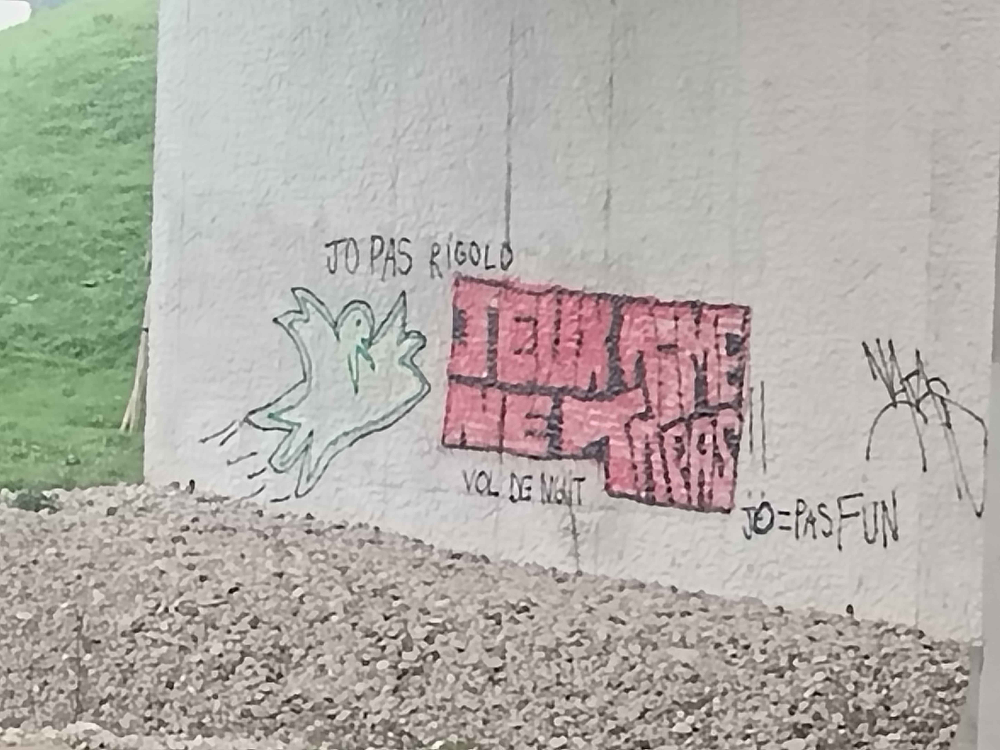

Report
By going out into the field, we were able to observe the various infrastructures that were put in place during the Paris Olympics.
 

The city of Saint-Denis has a large urban population, and we can see that some of the athletes' sports accommodation is being converted into office buildings, which will encourage the creation and/or implementation of new businesses. It's also a way of boosting the local economy. Renovation also helps to reduce additional material and ecological production costs.
 

The RATP is making an effort to go green, and decided to make the transition to a greener transport system some time before the Olympic Games. We can see many of its transport systems undergoing a change of fuel, switching from petrol engines to electric or semi-electric engines, thus drastically reducing their greenhouse gas emissions.
 

There are also new infrastructures such as the Gare de Saint-Denis-Playel and its footbridge linking 2 parts of Paris separated by the flow of the Seine. This station was built on former industrial sites and is once again flourishing. Work is also underway to extend and create new transport lines.
 

Despite the future facilities planned for the public and the measures put in place to cause as little inconvenience as possible, some residents remain unhappy about the Olympics and have expressed their opposition to the presence of the Games in their town.